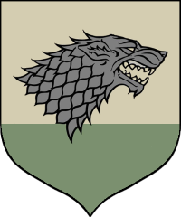
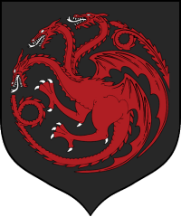
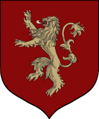
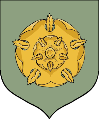
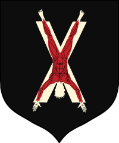
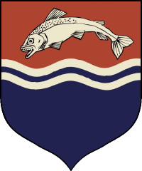
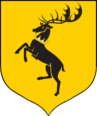
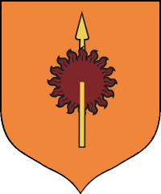

-
House Stark
House Stark of Winterfell is a Great House of Westeros and the royal house of the Kingdom of the North. They rule over the vast region known as the North from their seat in Winterfell. It is one of the oldest lines of Westerosi nobility by far, claiming a line of descent stretching back over eight thousand years. Before the Targaryen conquest, as well as during the War of the Five Kings and early on in Daenerys Targaryen's war for Westeros, the leaders of House Stark ruled over the region as the Kings in the North. House Stark's sigil is a grey direwolf on a white background, over a green escutcheon. They are one of the few noble Houses whose family motto is not a boast or threat. Instead, the House Stark family motto is a warning, one that, no matter the circumstances, will always be relevant: "Winter Is Coming."
-
House Targaryen
House Targaryen of Dragonstone is an exiled Great House of Westeros and the former royal house of the Seven Kingdoms. House Targaryen conquered and unified the realm before it was deposed during Robert's Rebellion and House Baratheon replaced it as the new royal House. The two surviving Targaryens, Viserys and Daenerys, fled into exile to the Free Cities of Essos across the Narrow Sea. House Lannister replaced House Baratheon as the royal House following the destruction of the Great Sept of Baelor, but the realm was reconquered by Daenerys Targaryen, retaking the Iron Throne following the Battle of King's Landing. After she laid waste to a surrendered King's Landing, Daenerys was assassinated by Jon Snow to prevent further destruction. Jon became the last known living member of House Targaryen and his identity as the son of Rhaegar Targaryen is kept hidden from Westeros. He is exiled to the Night's Watch for the assassination of Daenerys. House Targaryen's sigil is a three-headed red dragon on a black background, and their house words are "Fire and Blood."
-
House Lannister
The Lannisters rule over the Westerlands. Their seat is Casterly Rock, a massive rocky promontory overlooking the Sunset Sea which has had habitations and fortifications built into it over the millennia. They are the Lords Paramount of the Westerlands and Wardens of the West. As the new royal house, they also ruled directly over the Crownlands from their seat of the Red Keep in King's Landing, the traditional seat of the royal family. House Lannister's Heraldry consists of a golden lion on a crimson background, and their House words are "Hear me roar!", which are rarely mentioned.[1] Their unofficial motto, which is as well known as the official one, is "A Lannister always pays his debts" - which is used much more often and mostly in negative context, though it can also be used in the original, literal sense.
-
House Tyrell
House Tyrell of Highgarden is an extinct Great House of Westeros. It ruled over the Reach, a vast, fertile, and heavily-populated region of southwestern Westeros, from their castle-seat of Highgarden as Lords Paramount of the Reach and Wardens of the South after taking control of the region from House Gardener during the Targaryen conquest. The Tyrell sigil is a golden rose on a pale green field. Their house words are "Growing Strong."
-
House Bolton
House Bolton of the Dreadfort is an extinct Great House from the North. After the Red Wedding, they became the Great House of the North, having usurped their position from their former liege lords, House Stark. Their original lands were in the northeast of the Stark territories. Their stronghold was a castle called the Dreadfort and the head of the house was the Lord of the Dreadfort. House Bolton's heraldry consisted of a red flayed man upside-down on an x-shaped white cross over a field of black. Their house words were "Our Blades Are Sharp," though a common saying of members of the house was "A naked man has few secrets; a flayed man, none."
-
House Tully
House Tully of Riverrun is a Great House of Westeros. Its most senior member carried the title of Lord of Riverrun and Lord Paramount of the Trident, until the Red Wedding. The current head is Lord Edmure Tully, son of the late Hoster Tully. The Tully sigil is a silver trout on a red and blue background. Their house words are "Family, Duty, Honor." At the onset of the War of the Five Kings, House Tully came under attack by House Lannister and lent its support for House Stark when they came to their aid in the liberation of the Riverlands. House Tully has since been formally stripped of lands and titles for rebellion against the Iron Throne, with Lord Edmure a captive of House Frey following the Red Wedding.
-
House Baratheon
House Baratheon of Storm's End is a Great House of Westeros. A cadet branch was formerly the royal house, but House Lannister took control of the throne, though lost it to House Targaryen. House Baratheon traditionally rules the Stormlands on the eastern coast of Westeros, aptly named for its frequent storms, from their seat of Storm's End. House Baratheon became the royal house of the Seven Kingdoms after Robert Baratheon led a rebellion against the Targaryen dynasty. At the end of the rebellion, Robert ascended the Iron Throne as Robert I and married Cersei Lannister after the death of Lyanna Stark. House Baratheon became extinct after the deaths of Stannis Baratheon and his family, but was revived when Robert's last bastard was legitimized by Queen Daenerys Targaryen as Gendry Baratheon. House Baratheon's sigil is a crowned black stag on a gold background and their house words are "Ours Is the Fury."
-
House Martell
House Martell of Sunspear is one of the Great Houses of Westeros. It rules the peninsula of Dorne in the far south of the continent from their castle Sunspear. Though loyal to the Iron Throne, the Martells were never conquered by the Targaryens and pursued a more isolated role in wider political events since Robert's Rebellion. House Martell's sigil is a red sun pierced by a golden spear, on an orange field, a combination of the original Martell sigil - a yellow spear - and the emblem of Princess Nymeria - a red sun - to symbolize the marriage of the warrior-queen to Mors Martell. Their house words are "Unbowed, Unbent, Unbroken."